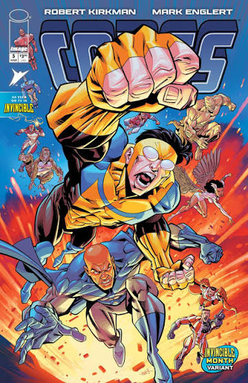

Muestra del Cómic

Página 1 de 3
Sobre Nosotros
Nuestra Historia
Somos un grupo de estudiantes de preparatoria preocupados por el impacto del uso excesivo de las redes sociales. A través de este proyecto gráfico, buscamos visibilizar problemas reales como la ansiedad, la depresión y el aislamiento digital.
Nuestra Misión
Crear conciencia de una forma visual y accesible para jóvenes de nuestra edad, fomentando un equilibrio sano entre la vida digital y el bienestar emocional.
Integrantes del Equipo
- Sofía Martínez: Guionista e Investigadora
- Carlos Gómez: Ilustrador Principal
- Mateo Ruiz: Desarrollo Web y Diseño
- Ana López: Edición y Redacción
¿Por qué este tema?
Pasamos horas haciendo scroll en redes, comparando nuestras vidas con pantallas perfectas. Queremos que el lector se reconozca en estos paneles y reflexione sobre su propia salud mental.